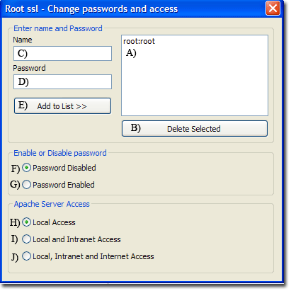

|
|
Root folder ssl - Access |
Creating a new server certificate for The Uniform Server automatically enables SSL in Apache's configuration file. You can now access your server using either http or https. The Uniform Server has a predefined folder (ssl root folder) that is reserved for https access. By default, this folder is restricted to local access only. The following covers opening up your server for public or intranet access, and optionally restricting access using a name and password.
Note 1: This menu option requires an .htaccess file in the root folder ssl. If this file does not exist, you are given an option to create it.
Note 2: If it does not already exist, a backup htaccess file (.htaccess_back) is created. This allows the original file to be manually restored.
Overview
Apache > Access and Passwords > Folder ssl access and passwords
|
This menu is split into three sections as follows:
|
 |
Note 1: Server access is controlled using an .htaccess file. This can be directly edited.
Note 2: Apache does not require restarting; all changes take effect immediately.
Background information
There are three ways of restricting access to documents: either by IP address, hostname or by asking for a username and password. The first two are very similar and can be used to restrict access on an intranet. The last option allows users to be restricted on an individual basis using a username and password. This process is commonly referred to as user authentication. The Uniform Server can restrict access using both IP address and user authentication.
Setting up user authentication requires two steps. First, you create a file containing a list of usernames and passwords. Secondly, you specify what resources are to be protected and which users are allowed to access them. Setting up IP address access requires only server configuration. Server configuration uses an .htaccess file located in the folder it is protecting (root folder ssl). This allows configuration to take immediate effect and does not require a server restart.
Creating a password file
A list of users and passwords needs to be created in a file. For security, this file must be located outside the document root. The Uniform Server is pre-configured and uses file: UniServerZ\htpasswd\ssl\.htpasswd
|
The file contains a list of name and password pairs, each on a single line. |
root:root mike:fred123 john:xyz45 dave_smith:za123 mike smith:good1234 |
|
|
Edit or change password
Add name/password pair to list
|
Note: The menu provides a convenient way to enter names and passwords.
You can edit the file UniServerZ\htpasswd\ssl\.htpasswd directly using a text editor.
Enable or disable name password access
Server configuration uses an .htaccess file located in root folder UniServerZ\ssl. It is pre-configured for basic authentication. The default is basic authentication disabled. Four lines (Apache directives) in this configuration file control authentication and are edited as follows:
|
Enable authentication
AuthName "Uniform Server - Secure Server Access" AuthType Basic AuthUserFile ../../../htpasswd/ssl/.htpasswd Require valid-user Disable authentication
#AuthName "Uniform Server - Secure Server Access" #AuthType Basic #AuthUserFile ../../../htpasswd/ssl/.htpasswd #Require valid-user |
Note: The menu provides a convenient way to enable or disable authentication.
Change Access
Server configuration uses an .htaccess file located in root folder UniServerZ\ssl. It is pre-configured to allow local access only. Four lines (Apache directives) control who can access the server. These lines are edited as follows:
Deny from all: No one allowed access
Allow from 127.0.0.1 192.168.0.0/16 172.16.0.0/12 10.0.0.0/8: Access is restricted to locahost and Intranet
Allow from 127.0.0.1: Access is restricted to locahost (127.0.0.1) IPv4
Allow from ::1: Access is restricted to locahost (::1) IPv6
Note: The menu provides a convenient way to change and restrict access.